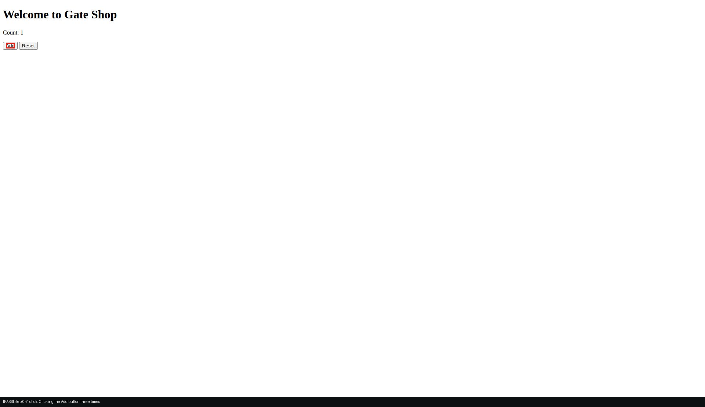
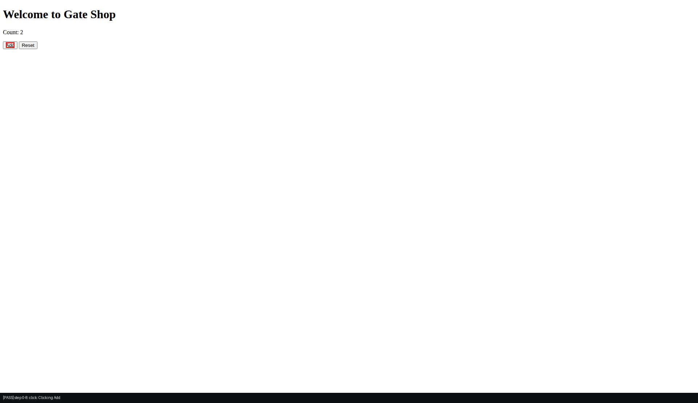

All 2 claims are true. This README told the truth.
2 verified
Changed since last run
c01 FALSE_CLAIM to VERIFIED
Claims
✓ Verifiedc01
line 6Clicking Add raises the count, and clicking Reset sets the count back to "Count: 0".
reset the counter on the app page
Expected (README)
count_after_resetCount: 0
Observed (Kane)
urlhttp://127.0.0.1:4173/
count_after_resetCount: 0
Last frame (step 11). Click to enlarge; pick an earlier step below.


attempt 1 passed
Details
Objective
Go to http://127.0.0.1:4173/. Open the app's page in the browser (start fresh). Click Reset. Click Add three times. Click Reset. Assert The text "Count: 0" is displayed on the page. Store the visible count text shown on the page after clicking Reset as 'count_after_reset'.
Summary
Opened the app page, reset the counter, and selected Add three times.
Reset the counter again as requested.
The page finished with the visible count set to “Count: 0”.
Step remarks
[2 running] Step 1
[2 done] navigate: Navigate to http://127.0.0.1:4173/
[3 running] Step 2
[3 done] wait: PRIMARY: wait briefly on the app's page
[8 done] click: Clicking the Add button three times
[9 running] Step 8
[9 done] click: Clicking Add
[10 running] Step 9
[10 done] click: Clicking Reset button in main content
[11 running] Step 10
[11 done] analyze: ANALYZE(textual_visual, 'the visible count text shown on the page after clicking
[12 running] Step 11
[12 done] assert: The text "Count: 0" is displayed on the page.
Duration 1m 18s · credits 19.9
Open run in Kane Test ManagerFull pack: kane-cli evidence serve ~/.testmuai/kaneai/sessions/8f515cc8-63e9-4892-9237-014c7d659374/evidence/edc7a1d7-a9bd-4dc7-80d2-cff44db71d2a.evidence
✓ Verifiedc02
line 5The page heading says "Welcome to Gate Shop".
opened the Gate Shop page on Gate Shop
Expected (README)
page_headingWelcome to Gate Shop
Observed (Kane)
urlhttp://127.0.0.1:4173/
page_headingWelcome to Gate Shop
Last frame (step 4). Click to enlarge; pick an earlier step below.
attempt 1 passed
Details
Objective
Go to http://127.0.0.1:4173/. Open the app's page in the browser (start fresh). Read the main heading at the top of the page. Assert The page heading reads "Welcome to Gate Shop". Store the visible text of the main page heading as 'page_heading'.
Summary
Opened the Gate Shop page from a fresh browser session.
Confirmed that the main heading reads “Welcome to Gate Shop” and saved that heading text.
The page opened successfully at the requested address.
Step remarks
[2 running] Step 1
[2 done] navigate: Navigate to http://127.0.0.1:4173/
[3 running] Step 2
[3 done] wait: PRIMARY: Open the app's page in the browser
[4 running] Step 3
[4 done] analyze: ANALYZE(textual_visual, 'The visible text of the main page heading is saved as {
[5 running] Step 4
[5 done] assert: The page heading reads "Welcome to Gate Shop".
Duration 31s · credits 12.1
Open run in Kane Test ManagerFull pack: kane-cli evidence serve ~/.testmuai/kaneai/sessions/df954a8a-667b-4d7d-9edc-4a73e59fa60f/evidence/bfc1617a-f6de-4d41-a31c-4e3718bf22dd.evidence
Not verifiable
README quote
Line
Reason
It loads instantly.
7
Vague speed claim with no measurable threshold; a browser agent cannot objectively verify it.
Run it with `python3 -m http.server`.
8
Shell command for starting a server; not observable in a browser.
Clicking Add raises the count
6
No specific count value is stated in the README, so no literal can be copied as an expected value.